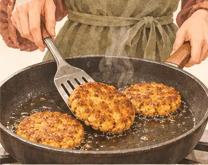
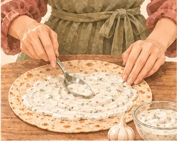
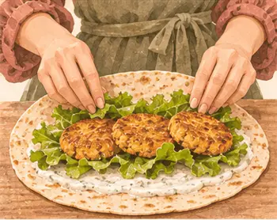
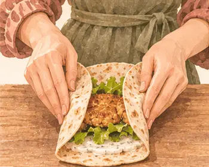
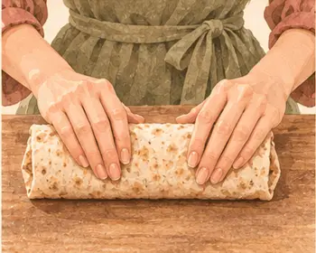

غداء العمل · ٣ عصرًا
لفافة أقراص الحمّص والشوفان
٤٨٥ سعرة للحصة١٨–٢٢ دقيقة
بروتين١٩ غ
كربوهيدرات٧٤ غ
دهون١٣ غ
ألياف١٢.٤ غ
كالسيوم٢٤٣ ملغ
حديد٤.٢ ملغ
بوتاسيوم٤٤٧ ملغ
فيتامين ج٣ ملغ
القيم الغذائية تقديرية للحصة الواحدة.

مكوّناتك
الوزن بالجرام · حدّد ما جهّزته
| المكوّن | حصة | ٣ حصص | ٤ حصص |
|---|---|---|---|
| ١٤٠ | ٤٢٠ | ٥٦٠ | |
| ٢٠ | ٦٠ | ٨٠ | |
| ٥٠ | ١٥٠ | ٢٠٠ | |
| ٢٥ | ٧٥ | ١٠٠ | |
| ٤٥ | ١٣٥ | ١٨٠ | |
| ٤ | ١٢ | ١٦ |
الأدوات · شوكة، وعاء، مقلاة غير لاصقة
خطوة صغيرة، وطبق لذيذ
يلا، نطبخها معًا.
خذ وقتك، واتبع الصور على راحتك.
الخطوة٠١
اشطف الحمّص وصفّه وجفّفه.
الخطوة٠٢
اهرسه جيدًا.
الخطوة٠٣
أضف الشوفان وملعقة صغيرة ماء.
الخطوة٠٤
انتظر ٣ دقائق.
الخطوة٠٥
شكّل ٣ أقراص مسطّحة.
الخطوة٠٦
سخّن الزيت على نار متوسطة.

الخطوة٠٧
حمّر ٣–٤ دقائق لكل جهة واقلب بملعقة مسطّحة.

الخطوة٠٨
ادهن الرغيف بزبادي الثوم.

الخطوة٠٩
ضع الخس والأقراص في الوسط.

الخطوة١٠
اطوِ الجانبين للداخل.

الخطوة١١
لفّ الرغيف بإحكام.